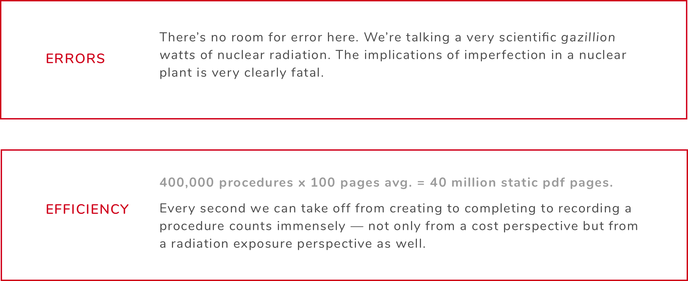
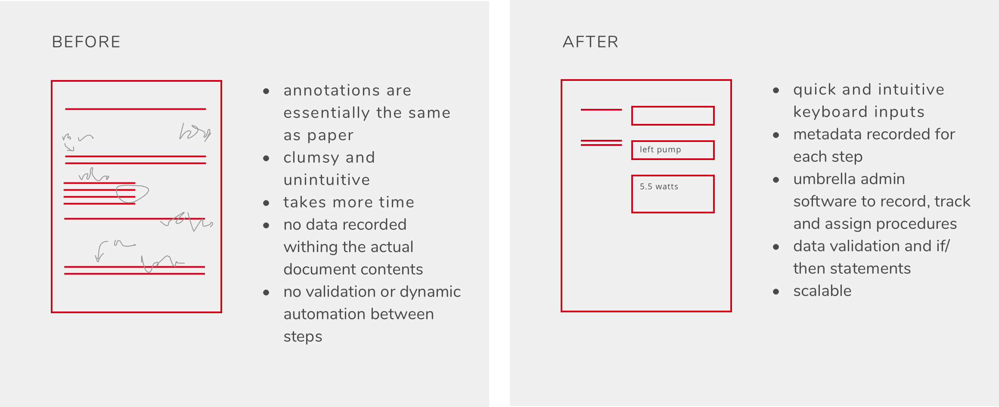
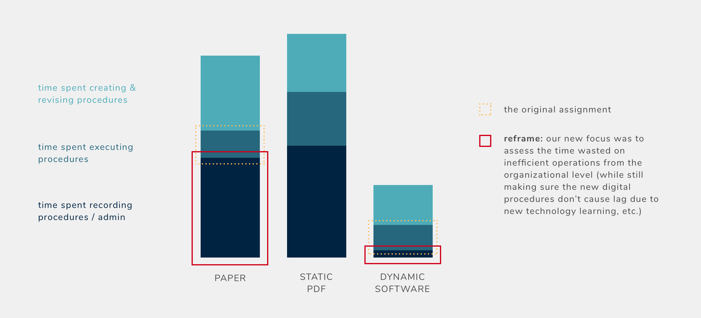

complete plant digitization
Under a local Austin agency and a strict NDA, I got the opportunity to completely re–imagine the way a Fortune 100 energy company carries out its massive operations using dynamic software design.
Straight from a retro science fiction film, the 1970’s-built control room at one of the world’s most powerful nuclear generation plants is a contender for one of America’s best-kept secrets. The utilities industry is fixated in decades of large-scale machinery and capital investments, making it an unimaginably difficult and inaccessible innovation initiative.
When a utility giant with a fleet of generators at this scale (unnamed, for now) so deeply grounded in a scientific and regulated paper procedures process asks you to rethink and evaluate an entire digitization of their workflow, it’s undeniably all or nothing.
THE PROBLEM:
A PREVIOUS MANAGEMENT CONSULTING INITIATIVE:
“Okay, so let’s make an app.”
This is one of my favorite stories, especially for selling the design value proposition. What happens when a management consulting firm implements a very one-dimensional digitization strategy by converting printed paper PDF’s into static PDF’s on iPads and Apple Pencils to annotate? You get :
- a bunch of almost-retired engine operators holding what’s functionally the same thing as printed paper but heavier
- negative $20 million in conversion and technology costs, and
- quite literally an even longer work process after they figured out that operators were printing the converted PDF, completing the procedure on pen and paper, scanning it back in to pretend they utilized this new initiative, and then submitting it to records.
As a bonus, now the records department has to reconcile documents between those who were willing to comply with the digitization and those who submitted their procedures in a paper bucket. So, we suggested they hire some designers (us) instead.
THE SOLUTION
We always had a hunch that regardless of the type of PDF, static or dynamic, the actual execution of the procedcure wasn’t the biggest opportunity we had. The value we wanted to see if we could capture in our research on our onsite trip was in the workflow — the process of moving the procedures around in the most accurate an efficient way possible. We wanted to validate:
Q: How in the world can a three person design team from a five-month-old agency convince a Fortune 100 company to upturn their entire workflow in a groundbreaking 10-15 year plant digitization initiative?
A: We’re still trying our best, but we’ve secured another year’s round of validating data and research after giving them some peace of mind by creating a specialized business case for digitization in the form of a visual calculator, coded to toggle between (currently) 48 different economic scenarios to prove profits and losses year over year.
THE CALCULATOR:
With tens of thousands of hours put into finance and accounting classes, stock pitches, and a brief period of time in an 80-hour-work-week environment, I knew exactly how uninterpretable financial datapacks are. Giving clients just a simplified but interpretable extrapolated report creates a certain level of doubt, but presenting the entire pack of raw data and formulas would be dizzying and overwhelming.
Especially when we have hundreds of staff interview quotes that sounded like this: “procedures can take anywhere between an hour to 2 weeks,” and “I submit paper copies…not really at a certain time. Just whenever it builds up.” We also only interviewed a fraction of one department at one of the 14 generation sites.
The challenge was to present an interactive but flexible set of data to accomodate for the wide ranges and hefty extrapolations, focused on usability. In short: the computing and data-sorting power of an Excel spreadsheet with the readability of a designed report.
The result is a 10+ sheet Excel power computer that utilizes multiple rounds of data validation and logical functions, showing the client exactly which variables they can toggle and input new numbers, spitting out a range of values from safety numbers to their most optimistic counts - a resulting project upside of more than $90 million in overall company value.
As this is an ongoing project under NDA, but I’d love to chat more about this topic in person. Email me at design@anniexue.me!